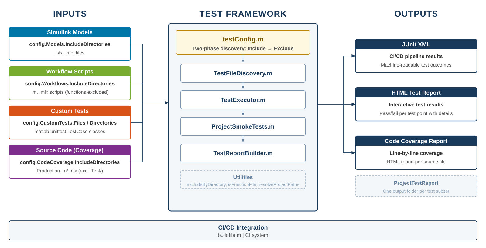

Overview
Comprehensive guide for the MATLAB/Simulink project test framework
This test framework provides automated smoke testing, code coverage, and reporting for MATLAB/Simulink projects. It is designed to integrate with CI/CD pipelines and supports configurable test subsets.
Test Pipeline Overview

Documentation Pages
| Document | Description |
|---|---|
| Getting Started | Quick-start guide covering prerequisites, installation, and running your first test. |
| Configuration Guide | How to create and customize testConfig.m files, including the two-phase inclusion/exclusion discovery pipeline. |
| Framework Reference | Detailed API reference for all framework classes, functions, and utilities. |
Folder Structure
Test/
├── Documentation/ % This documentation
│ ├── TestFrameworkHome.html
│ ├── images/
│ ├── pages/
│ └── styles/
├── Framework/ % Test framework engine
│ ├── ProjectSmokeTests.m
│ ├── TestExecutor.m
│ ├── TestFileDiscovery.m
│ ├── TestReportBuilder.m
│ └── Utilities/
│ ├── excludeByDirectory.m
│ ├── isFunctionFile.m
│ └── resolveProjectPaths.m
├── testConfig_<1>.m % Test configuration
└── testConfig_<2>.m % Add more subsets as neededWhy Use This Framework
- Zero Test Authoring for Smoke Tests — The framework automatically generates parameterized test points for every discovered model and script. You do not need to write individual test files for each Simulink model or workflow script.
-
No Additional Toolbox Dependencies —
The framework relies entirely on
matlab.unittestand its built-in plugins, all of which ship with base MATLAB. -
Configuration-Driven Design —
All test behavior is controlled through a single
testConfig_<Name>.mfile. There is no hardcoded logic binding the framework to specific project structures. - Built-in CI/CD Integration — The framework generates JUnit XML reports that are natively consumed by CI systems.
- Automatic Code Coverage — Code coverage measurement is built into the test execution pipeline. The framework discovers your production source files, attaches coverage instrumentation, and generates an interactive HTML coverage report.
- Test Isolation and Cleanup — Each test runs in a temporary working folder. All Simulink models and figures opened during a test are automatically closed in teardown.
- Flexible Discovery — The inclusion/exclusion pipeline gives you fine-grained control over which files are tested. You can include entire directory trees with recursive search, add specific files explicitly, then surgically exclude directories or individual files.
-
Multiple Independent Test Subsets —
You can define as many
testConfig_<Name>.mfiles as needed, each producing independent test results and reports. -
Selective Execution —
The framework provides dedicated methods (
runModelsOnly,runWorkflowsOnly,runCustomOnly) that allow you to execute only the portion of the test suite relevant to your current work. -
Extensibility via Custom Tests —
Beyond smoke tests, you can include any
matlab.unittest.TestCaseclasses in the same test run. -
Dry Run Support —
The
TestExecutor.dryRun()method previews exactly which files the framework will discover and test, without executing any simulations or scripts.
Key Concepts
- Test Subsets — Each
testConfig.mdefines an independent test subset with its own models, workflows, coverage, and report settings. - Two-Phase Discovery — Files are first included (via recursive directory search + explicit files), then excluded (via directory/file ignore lists). Exclusion always wins.
- Smoke Tests — Models are loaded and simulated; scripts are executed inside
verifyWarningFree(). - Custom Tests — Additional
matlab.unittest.TestCasefiles or directories can be included alongside smoke tests. - Reporting — JUnit XML (for CI), HTML test reports, and code coverage reports are generated automatically.